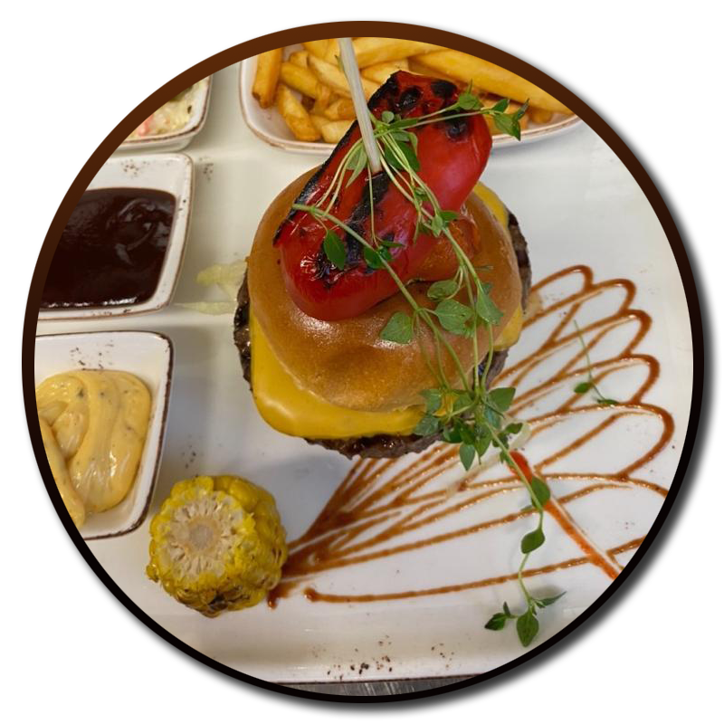

Brunna Kök & Bar - Restaurangen i hjärtat av brunna
Restaurangen i hjärtat av Brunna. Detta gastronomiska utrymme, som ligger i Brunnaområdet, tar hand om varje detalj för att ge gästerna en unik upplevelse. Med ett brett utbud av rätter och en trevlig atmosfär, oavsett tid på dygnet, får du en känsla av att vara hemma. Vi är en familjevänlig restaurang som erbjuder något för alla. Kom in på ett glas öl eller vin efter jobbet, eller bjud familjen på en trerättersmiddag.
Våra luncher är inspirerade av klassisk svensk husmanskost, och vi varierar menyn för att göra varje dag till en ny upplevelse. Senare på kvällen erbjuder vi en omfattande à la carte-meny som passar alla.
På kvällen har vår meny allt från favoriter till en fullspäckad trerättersmiddag. Våra middagar kan bokas som takeaway.
Brunna Kök & Bar
Måndag-fredag 10.00-14.0008-508 670 00
Violinvägen 2, 196 37 Kungssängen